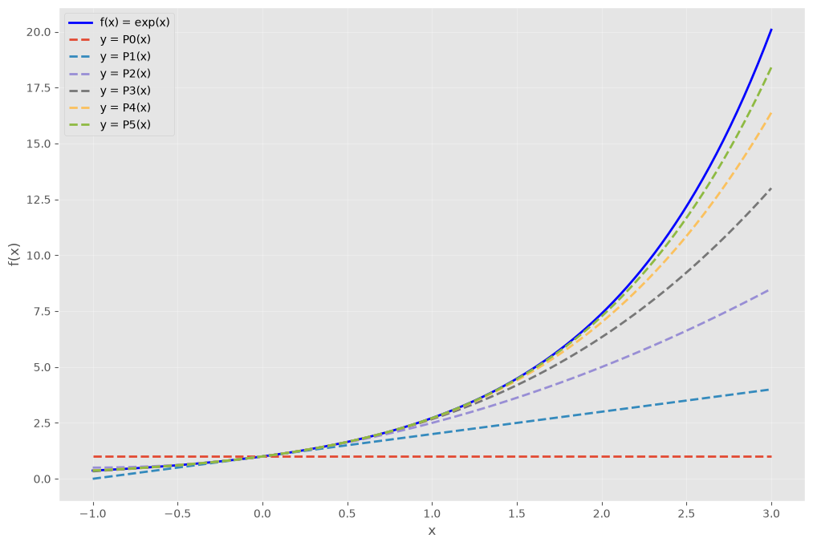

Interpolación de una función#
Los polinomios algebraicos son una de las clases de funciones más útiles y conocidas que aplican el conjunto de los números reales en sí mismos. El conjunto de funciones de la forma
donde \(n\) es un entero no negativo y \(a_{0},\dots,a_{n}\) son constantes reales.
Teorema 10 (Aproximación de Weierstrass)
Suponga que \(f\) está definida y es continua en \([a, b]\). Para cada \(\varepsilon > 0\), existe un polinomio \(P(x)\) con la propiedad de que
Ejemplo 1. Suponga que se necesita calcular los primeros seis polinomios de Taylor sobre \(x_{0}=0\) para \(f(x) = e^{x}\). Esto es
import numpy as np
import matplotlib.pyplot as plt
# Suprimir advertencias menores de integración durante los bucles de optimización
import warnings
warnings.filterwarnings("ignore")
# Configurar el estilo de graficación para una mejor visualización
plt.style.use('ggplot')
x = np.linspace(-1, 3, 100)
f = lambda x: np.exp(x) # Función original
P0 = lambda x: np.ones_like(x) #
P1 = lambda x: 1 + x #
P2 = lambda x: 1 + x + x**2/2 #
P3 = lambda x: 1 + x + x**2/2 + x**3/6 #
P4 = lambda x: 1 + x + x**2/2 + x**3/6 + x**4/24 #
P5 = lambda x: 1 + x + x**2/2 + x**3/6 + x**4/24 + x**5/120 #
# Graficar
plt.figure(figsize=(12, 8))
plt.plot(x, f(x), 'b', linewidth=2, label='f(x) = exp(x)')
plt.plot(x, P0(x), '--', linewidth=2, label='y = P0(x)')
plt.plot(x, P1(x), '--', linewidth=2, label='y = P1(x)')
plt.plot(x, P2(x), '--', linewidth=2, label='y = P2(x)')
plt.plot(x, P3(x), '--', linewidth=2, label='y = P3(x)')
plt.plot(x, P4(x), '--', linewidth=2, label='y = P4(x)')
plt.plot(x, P5(x), '--', linewidth=2, label='y = P5(x)')
plt.xlabel('x')
plt.ylabel('f(x)')
plt.grid(True, alpha=0.3)
plt.axis('tight')
plt.legend()
plt.show()

Ejemplo 2. Utilice polinomios de Taylor de diversos grados para \(f(x) = 1/x\), en torno a \(x_{0} = 1\), para aproximar \(f(3) = 1/3\). Entonces, calculamos
o de forma general
los polinomios de Taylor son